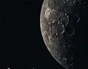
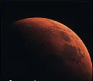

Leer
Ensayos para pensar el tiempo, la existencia y lo que nos hace humanos.
EnsayosSer, existencia y ulterioridad
Un cruce entre filosofía, ciencia y ficción
para explorar eso que sigue, incluso
cuando todo parece terminar.
Ensayos para pensar el tiempo, la existencia y lo que nos hace humanos.
Ensayos
Meditaciones sobre la naturaleza del tiempo
Investigación
Una novela de historia alternativa ambientada en Marte, en 1978.
Marte